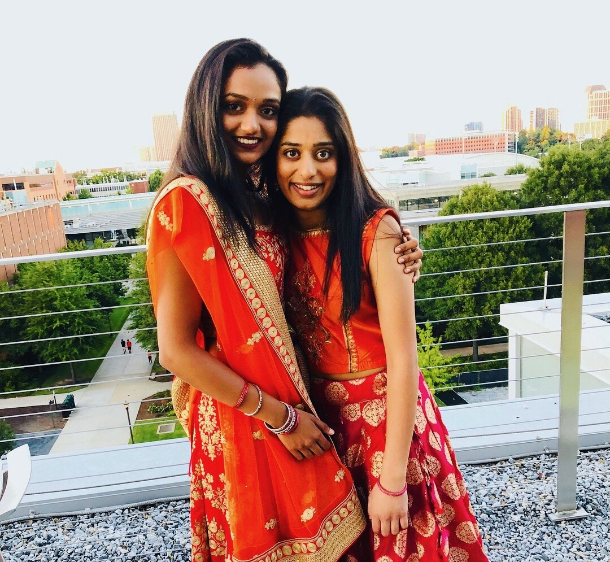

| GT Prism ID | idesai8 |
| Age | 18 |
| Year | Freshman |
| Major | Biochemistry |
| Hometown | Rome, GA |
I am attending Georgia Tech and majoring in Biochemistry on a pre-med track because I hope to go to medical school in the future. I am currently in my second semester of college. I have met so many amazing people except Rithik and made so many friends in the past few months. My favorite memory with my friends so far has been Garba. Below is a picture from the event; you can click on the picture to learn more about the history and culture behind Garba. I have also gotten involved with several extracurriculars and student organizations including AMSA (American Medical Student Association) Fundraising Committee, Student Hospital Connections, Honor Advisory Council, and most recently, FASET Leadership. In my free time, I love to paint. For inspiration, I use Pinterest. Below, there is link to the Pinterest Website.
Click here to go to Pinterest 